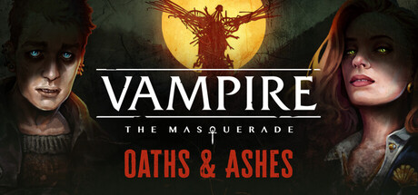
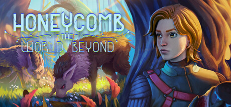
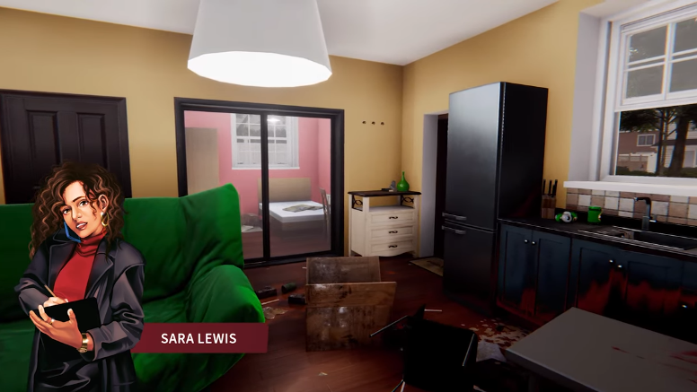
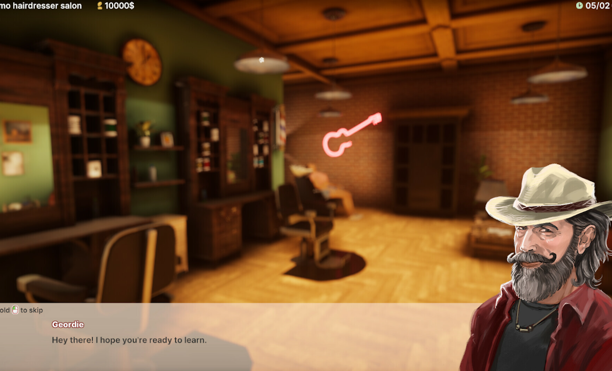

Oaths & Ashes
Developmental and stylistic editing, additional scenes and narrative QA for a Vampire: The Masquerade visual novel.

Narrative designer, writer & editor
Developmental and stylistic editing, additional scenes and narrative QA for a Vampire: The Masquerade visual novel.

Quest design, dialogue and voice direction for an open-world survival game.

I adapted email-based quests into voiced scenes and prepared character briefs for artists and actors.

I created 27 characters, each with a story unfolding across three salon visits.

A playable conversation. You are a soldier escorting a prisoner who might not be what she seems.
A branching quest about a village, its miraculous tree, and the price of keeping it alive.
An extract from my Gothic space opera and science-fiction horror novel.
I'm Aleksandra, a narrative designer, writer and editor. I've worked on survival games, simulators and visual novels, with hands-on experience in Unity and Unreal Engine 5.
It started with tabletop RPGs. These days, I write dialogue, build quest flows and work with the people who bring them into the game. I believe stories are there to be implemented, performed and iterated on, not enshrined as The Sacred Texts.
I'm open to narrative design, game writing and editing opportunities, including freelance work.
Unity · Unreal Engine 5 · Articy:draft · Twine